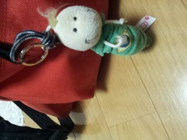

| 2012/09 05 Wed | 公演 ３日目★☆★ ろってぃー(^ω^) |
ほっほほーい☆☆☆
ろってぃー♪でぃす。

今日も渋谷PARCO劇場での
公演でした*^^*
結果は 『16位』
一つさがっちゃった(´-`)
ほんとのことを言うとっ!!!
私は
イモムシがやりたwwwwwいっ!!!
練習期間の時,
なぜだか まひろは
イモムシ担当で
ほとんどイモムシのポジション
しか練習していませんでしたっ☆!!
だからっ!!
イモムシ目指して頑張るっ!!・ω
この公演が終わるまでに
一回だけでもいいから
イモムシがしたいですっ( >_<。)
私が 東京に上京する時に
友達からもらったものが
イモムシのストラップでした
(^ー^)にっ
めちゃくちゃ 可愛いんですっ!!
イモムシ。
何でこれくれんのう?って聞いたら
『これ まひろに似てるから
おもわず買ってしまった(>ω<)』
と言われました ^^
『目?鼻?口? どこが似てるさ?』
と聞くと
『どこのパーツとかぢゃなくて
全体的に似てるっ!
服装も似てる☆★☆』
って言われました...

... 服装。
・ω・
髪の毛も似てるかなあ?
実は,
気に入ってずっと
つけてます *^^*
一部の時も このオレンジの
リュックに このイモムシちゃん
つけてやってるんで
是非 見つけてください 笑
きっと オレンジで目立つと思うから
すぐに見つけれると
思...ぅ...。
今日もこのイモムシ付き
だったよ・ω・´にょき。
ほいっ!
とゆうことで
明日も 全力で頑張りますっ★☆★
以上っ)) ろってぃーでしたっ(!・ω・)
のし
コメント(286)
2012/09/05 00:06